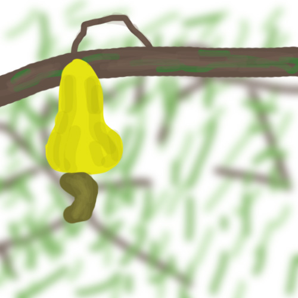

Cashew
From Wikipedia, the free encyclopedia|  | |
|---|---|
| Cashew fruit | |
| Type | Edible foodstuff |
| Status | Unknown |
The cashew is a mythical food product said to come from a fruit called a "cashew apple". There have been no publically documented sightings of this food product in the wild, although there are unsubstantiated claims posted online from readers claiming to have eaten a cashew, saying it has changed their lives (either for better or worse depending on the person). They are said to contain high amounts of protein, healthy fat, and antioxidants.
Notoriety
Millionaire Donald J. Trump has stated that he will pay $999,999.99 to whoever will sell him a cashew.
YouTuber Tobuscus has made an animated music video featuring the cashew as the subject of a song about a "little Tim Tim" trying to write a viral song.